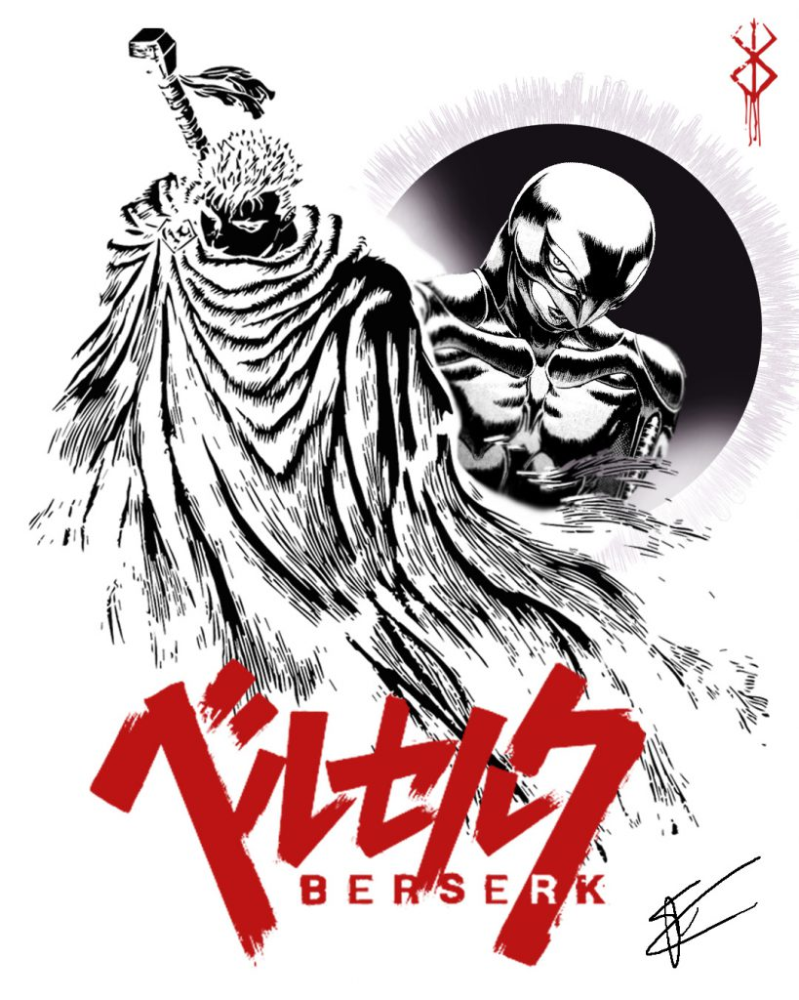
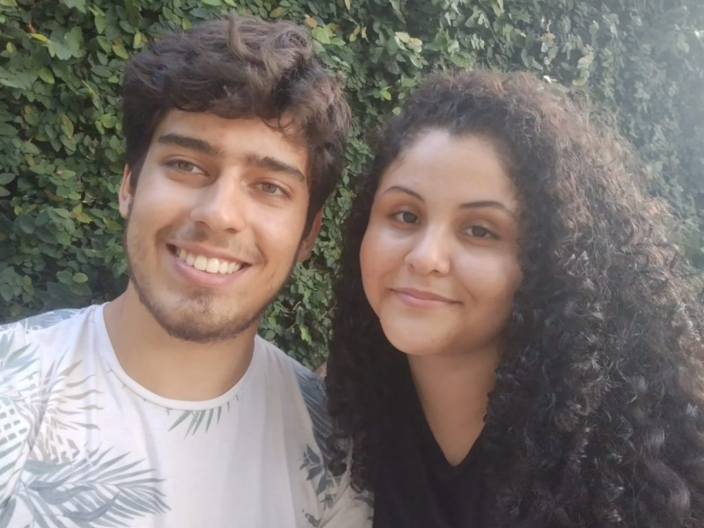

Leonardo Jacon gonçalves
Nasci em São Paulo, porém fiz diversas mudanças ao longo da vida. Morei cerca de um ano no Rio de Janeiro, aproximadamente 6 anos em Holambra, uma cidade próxima a Campinas, e, por fim, mudei-me para uma cidade também pequena no sul de Minas, perto de Pouso Alegre, chamada Pedralva. Atualmente, por conta da faculdade, moro em Alfenas
Passatempos e interesses pessoais
Filmes
Meu pai sempre gostou muito de filmes, e por conta disso, sempre assistíamos filmes juntos. Isso moldou meu gosto por filmes, e meus gêneros preferidos são, sem dúvida, ficção científica e terror. No entanto, gosto realmente de assistir qualquer tipo de filme, desde que a companhia seja boa e tenha pipoca. Minhas sagas preferidas são Rocky Balboa, Star Wars e Invocação do Mal.
Jogos
Sou um amante de jogos de todos os tipos: cartas, tabuleiros, eletrônicos e de qualquer estilo, desde jogos mais cooperativos até jogos competitivos. Acho uma ótima forma de se divertir e passar o tempo, fazer amigos e dar muitas risadas. Alguns jogos que gosto são:
-
Magic the gathering
- É a combinação de um jogo e um hobby
- Trading card game
- Competitivo e divertido
-
Zombicide
- Jogo de tabuleiro
- Cooperativo
- Tematica de apocalipse zumbi
-
Truco
- Um clássico brasileiro
-
Dark Souls
- É um videogame
- Temática de fantasia medieval
- Um universo perfeito
Cozinhar
Sou um homem apaixonado por comida. Desde criança, fui aprendendo a cozinhar, e meus pais sempre foram grandes incentivadores. Hoje, considero-me um bom cozinheiro (modéstia à parte). Tenho mais habilidade para fazer carnes e churrascos, mas também consigo me dar bem fazendo massas e sobremesas. Uma das minhas receitas preferidas é o Pretzel doce. Uma receita bem feita pode transformar uma tarde vazia em um momento inesquecível, alegrar uma festa ruim e até mesmo conquistar o amor da sua vida (a maneira mais rápida de chegar ao coração é pelo estômago). Por fim, passarei uma receita simples e rápida de marshmallow caseiro:
Ingredientes:
- 2 ovos
- 1 e 1/2 xícara de açucar
Modo de preparo:
- Em uma panela, junte as claras dos ovos com o açúcar.
- Em fogo baixo, mexa as claras e o açúcar até que o açúcar esteja totalmente dissolvido
- Tome cuidado para que a mistura não esquente demais e as claras comecem a cozinhar. O ideal é que fique em uma temperatura mais morna, então vale a pena intercalar entre misturar no fogo e fora do fogo.
- Assim que o açúcar estiver dissolvido, bata a mistura com a ajuda de uma batedeira por cerca de 10 minutos (depende da intensidade da batedeira), até obter um marshmallow firme e branquinho.
- Fica ótimo para comer com panquecas, morangos ou até mesmo para colocar no café.
Mangás
Mangás são histórias em quadrinhos japonesas que você lê de trás para frente. Gosto bastante desse gênero, pois fogem bastante das histórias em quadrinhos ocidentais, que em sua maioria são sobre super-heróis. Li uma quantidade interessante de mangás, mas infelizmente não tenho uma coleção física. No entanto, é um sonho que carrego. A seguir, uma lista com meus mangás preferidos:
Top 5 melhores mangás (minha opinião)
- Berserk
- One piece
- Tokyo Ghoul
- Boku no Hero Academia
- Attack on Titan 
Minha namorada
Acho totalmente necessário deixar registrado que sou um amante, perdidamente apaixonado pela minha namorada. No dia 12/06/2023, completamos 5 anos de namoro. Sinto que ela me completa, e passamos por tantas coisas juntos que acho que ela me conhece melhor do que eu mesmo. A realidade é que ela é a mulher dos meus sonhos, que caiu de paraquedas em meus braços. Em breve, será minha noiva e, mais adiante, minha esposa. Teremos um futuro incrível juntos
Formação Academica
Escola Estadual Comendador Mario Goularte Santiago
- Ensino Médio
- Ensino fundamental